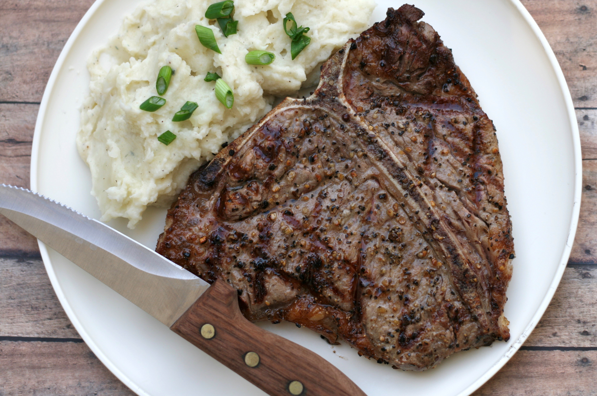

Barbequed Steak

Tasty, easy and delicious.
A tender cut like Porterhouse, T-Bone, Rib Eye, New York or Top Sirloin are all good steaks for this simple marinade. Serve with a dollop of garlic butter, if desired.
This is a great way to do steaks when you don't have time or want to marinate them. We usually do two NY strips and use olive oil vs. veg. oil with McCormicks Montreal Steak Seasoning.
Ingredients
- 4 (1/2 pound) beef top sirloin steaks
- 1/2 cup vegetable oil
- 1 ounce steak spice seasoning mix
Steps
- Put oil and steak spice on a large enough platter to accommodate the steaks. Coat the steak well with the oil and spices.
- Preheat an outdoor grill for high heat and lightly oil grate
- Grill steaks over high heat to desired doneness.